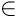

Teko is a Trilinos package for block and physics-based preconditioning. It provides tools to assemble and manipulate block linear operators, to decompose a fully coupled operator into its physical sub-blocks, and to build approximate inverses of those blocks using the full complement of Trilinos solvers and preconditioners (Ifpack2, MueLu, Amesos2, Belos, …). On top of that infrastructure Teko ships a library of generic block preconditioners (block Jacobi, block Gauss–Seidel, LU 2×2) and physics-based preconditioners for the Navier–Stokes equations (SIMPLE, LSC, PCD).
Teko means "fuse" in Greek — suggestive of what the package does: fusing multiple physics into a single preconditioner. The original motivation was preconditioners for magnetohydrodynamics and fusion-reactor simulation. For the theory behind the Navier–Stokes methods, see Cyr, Shadid & Tuminaro, Stabilization and Scalable Block Preconditioning for the Navier–Stokes Equations, JCP 2011.
This guide focuses on the parts of Teko that have historically been under-documented: the configuration options (the Teuchos::ParameterList / XML keys that control every preconditioner) and worked examples that show how the pieces fit together.
How to read this guide
| Page | What it covers |
|---|---|
| Getting Started | Core concepts and a minimal end-to-end example: blocked operator → strategy → inverse → apply. |
| Configuration Model | The three-layer configuration model and the first complete Teko XML example. Start here for options. |
| The Inverse Library | How named inverses work and how they reference Ifpack2 / MueLu / Amesos2 / Belos. |
| Block Preconditioner Reference | Exhaustive parameter tables for every built-in block preconditioner. |
| Navier–Stokes Preconditioners | SIMPLE, LSC, PCD, and the operators they require from the application. |
| Examples | Walkthroughs of the in-tree example drivers, with run instructions. |
| Advanced Topics | The RequestHandler callback system, reordering, operator reuse, and writing your own factory. |
| Cookbook | Common blocking, solver-composition, reuse, debugging, and multiphysics recipes. |
Glossary
- Block linear operator — a linear operator whose action is defined in terms of a grid of sub-blocks

- Strided blocking — the rule that maps the degrees of freedom of a monolithic operator onto blocks. For unknowns interleaved per node as [u v w p T], the strided-blocking string "3 1 1" groups the first three unknowns (velocity) into one block and puts p and T into their own blocks. See Configuration Model.
- Inverse factory (Teko::InverseFactory) — an object that, given a linear operator, produces a new operator approximating its inverse (a direct solve, a Krylov solve, a single-level preconditioner, or a Teko block preconditioner).
- Inverse library (Teko::InverseLibrary) — a registry of named inverse factories built from a parameter list. Names defined here are how one preconditioner references another. See The Inverse Library.
- Strategy — for the more sophisticated preconditioners (LSC, PCD, LU2x2) the Schur-complement approximation is factored out into a pluggable strategy object, selected by a "Strategy Name" parameter.
- RequestHandler (Teko::RequestHandler) — a callback mechanism through which a factory asks the application for operators it cannot assemble itself (e.g. a velocity mass matrix or a pressure Laplacian). See Advanced Topics.
The 30-second picture
Teko preconditioners are configured through nested Teuchos::ParameterLists (equivalently, XML). There are three layers, from the outside in:
- Stratimikos layer. Teko registers itself as a Stratimikos preconditioner named "Teko". Its top-level keys say how to split the monolithic operator into blocks ("Strided Blocking", "Reorder Type") and which named inverse to use for the whole system ("Inverse Type").
- Inverse Factory Library. A sublist named "Inverse Factory Library" defines every named inverse. Each entry has a mandatory "Type" that selects a backend — either a Stratimikos solver/preconditioner (Belos, Amesos2, Ifpack2, MueLu, Neumann Series, …) or a Teko block preconditioner ("Block Gauss-Seidel", "NS SIMPLE", …).
- Per-factory options. Each Teko block preconditioner reads its own keys (which sub-solve to use for each block, relaxation factors, Schur-complement strategy, …). These reference other names defined in the library, so preconditioners nest arbitrarily.
The next page walks through this model with a complete example.
Generated by